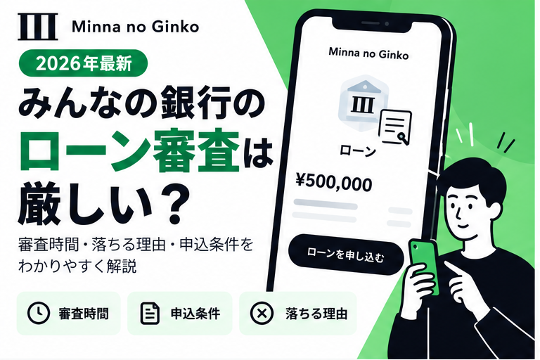
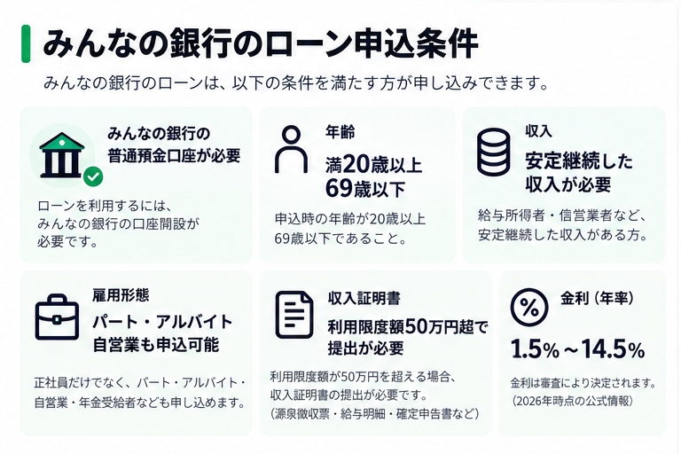
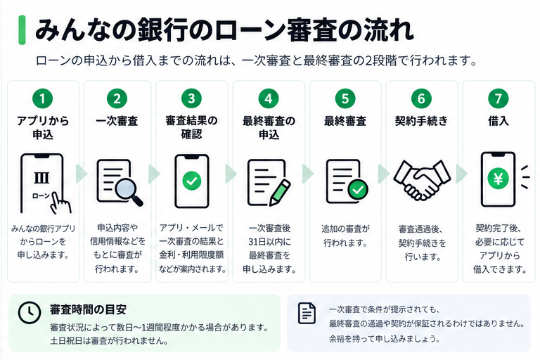
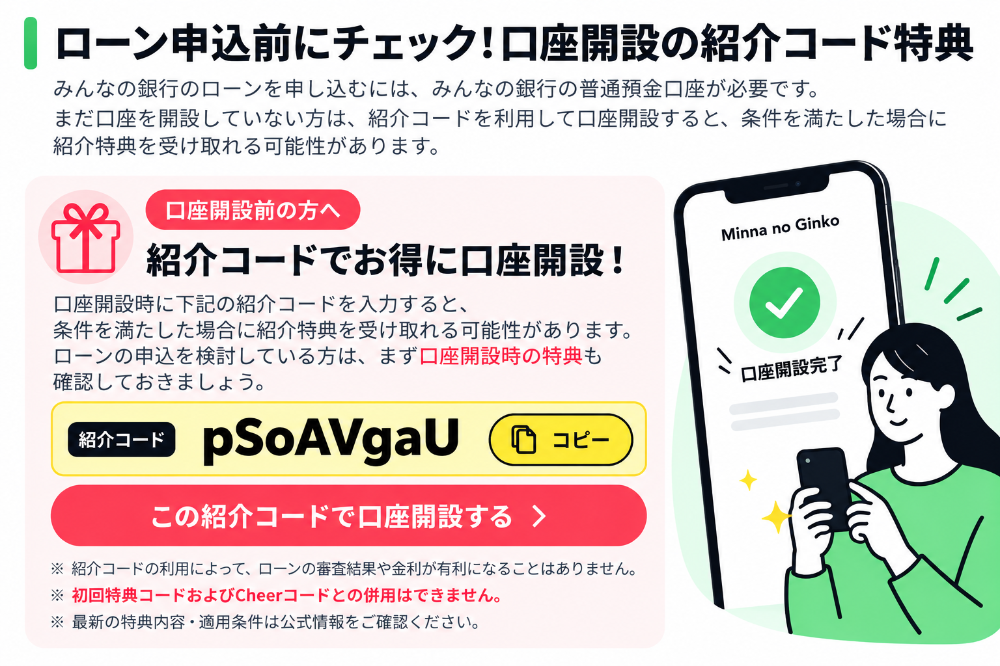

【2026年最新】みんなの銀行のローン審査は厳しい？審査時間・落ちる理由・申込条件を解説

みんなの銀行のローンを検討している方の中には、「審査は厳しい？」「何日くらいかかる？」「アルバイトでも申し込める？」と気になっている方も多いのではないでしょうか。
みんなの銀行のローンは、スマートフォンのアプリから申し込みできるサービスです。ただし、借入には銀行所定の審査があります。
この記事では、公式情報をもとに審査の流れや申込条件、審査に落ちた場合の注意点まで分かりやすく解説します。
📣 口座開設前に紹介コードの特典を確認しよう
みんなの銀行のローンを申し込むには口座が必要です。口座開設時に紹介コードを入力すると500円の特典が受け取れます。
紹介コード
pSoAVgaU
※紹介コードの利用によってローンの審査結果や金利が有利になることはありません
※ 初回特典コードおよびCheerコードとの併用はできません（公式）
みんなの銀行のローン審査は厳しい？
結論からいうと、みんなの銀行のローン審査が他の銀行より厳しいかどうかを客観的に判断できる公開データはありません。
審査基準や審査通過率は公開されておらず、申し込みには銀行所定の審査があります。そのため、「誰でも通る」「審査が甘い」といった情報を鵜呑みにしないことが大切です。
一方で、パート・アルバイト・自営業・年金受給者も、所定の申込条件を満たせば申し込めます。雇用形態で一律に門前払いとなる仕組みではありません。
ローンの申込条件

公式情報による主な申込条件は次のとおりです。
| 項目 | 条件 |
|---|---|
| 銀行口座 | みんなの銀行の普通預金口座が必要 |
| 年齢 | 満20歳以上69歳以下 |
| 収入 | 安定継続した収入が必要 |
| 雇用形態 | パート・アルバイト・自営業なども申込可能 |
| 金利（年率） | 1.5%〜14.5%（審査により決定） |
| 審査 | 銀行所定の審査あり |
⚠️ 条件を満たしていても、必ず審査に通過するわけではありません。
収入証明書は必要？
利用限度額が50万円を超える場合、収入証明書の提出が必要です。給与所得者なら源泉徴収票や給与明細、自営業者なら確定申告書など、公式に認められた書類を確認して準備しましょう。
審査時間はどのくらい？土日も審査される？
一次審査は最短即日で結果が出る場合もありますが、みんなの銀行の公式FAQでは、審査状況によって数日〜1週間程度かかる場合があると案内されています。申込内容や審査状況によって異なるため、余裕を持って申し込みましょう。
⚠️ 土日祝日は審査が行われません。週明けの月曜日から審査が再開されます。急ぎの場合は平日に申し込むのがおすすめです。
審査結果はメールとアプリ内で案内されます。
一次審査と最終審査の違い

ローンの手続きは、おおむね次の流れです。
アプリからローンを申し込む
一次審査を受ける
最短即日。ただし申込内容・審査状況により数日〜1週間程度かかる場合あり（土日祝は除く）
提示された金利・利用限度額などを確認する
一次審査終了後31日以内に最終審査を申し込む
31日を過ぎると再度一次審査が必要になる場合があります
最終審査の結果を確認する
契約手続きを行う
契約後、必要に応じて借入操作を行う
⚠️ 一次審査で条件が提示されても、最終審査の通過や契約が保証されるわけではありません。
ローン審査に落ちる理由は？
みんなの銀行は、審査で否決となった場合の個別の理由を公開していません。
一般的にローン審査では、以下のような要素が確認対象となることがあります。
- 収入の安定性
- 既存の借入状況
- 信用情報
- 申告内容の正確性
⚠️ ただし、これらがみんなの銀行の具体的な否決理由であると断定することはできません。申込時には正確な情報を入力し、借入希望額や返済計画に無理がないか確認しましょう。
ローンの申込方法
みんなの銀行アプリから、以下の手順で申し込めます。
アプリを起動する
Banking画面に切り替える
「ローン」タブを開く
「もっと詳しく」をタップする
「新規申込みへ」を選択する
画面の案内に従って必要事項を入力する
一次審査後は、最終審査と契約手続きが必要です
📹 動画で申込方法を確認する

タップして動画を再生 ▶

💡 まだ口座をお持ちでない方へ
口座開設時に紹介コードを入力すると500円の特典が受け取れます。
紹介コード
pSoAVgaU
※紹介コードはローンの審査結果・金利に影響しません
※ 初回特典コードおよびCheerコードとの併用はできません（公式）
📹 みんなの銀行について詳しく知る

タップして動画を再生 ▶
よくある質問
アルバイトでもローンに申し込めますか？
はい。安定継続した収入などの申込条件を満たせば、アルバイトやパートの方も申し込めます。ただし、審査通過を保証するものではありません。
審査は土日も行われますか？
いいえ。公式FAQによると、土日祝日は審査が行われません。
審査に落ちた理由は教えてもらえますか？
いいえ。審査で断られた理由や内容は、個別には回答されません。
一次審査に通れば借りられますか？
いいえ。最終審査を受け、契約手続きを完了する必要があります。一次審査の通過は最終審査の通過を保証しません。
審査中に申し込みを取り消せますか？
公式FAQでは、審査中のキャンセルや取り下げはできないと案内されています。
まとめ
みんなの銀行のローンは、アプリから申し込みでき、アルバイトやパートの方も条件を満たせば利用を検討できます。
ただし、審査には時間がかかる場合があり、審査通過が保証されるわけではありません。借入前には金利・返済条件を十分に確認し、無理のない返済計画を立てましょう。
土日祝日は審査が行われないため、余裕を持って平日に申し込むことをおすすめします。
まだみんなの銀行の口座を持っていない方は、口座開設前に紹介コードの適用条件も確認できます。
みんなの銀行の紹介コード・初回特典コードはこちら ›